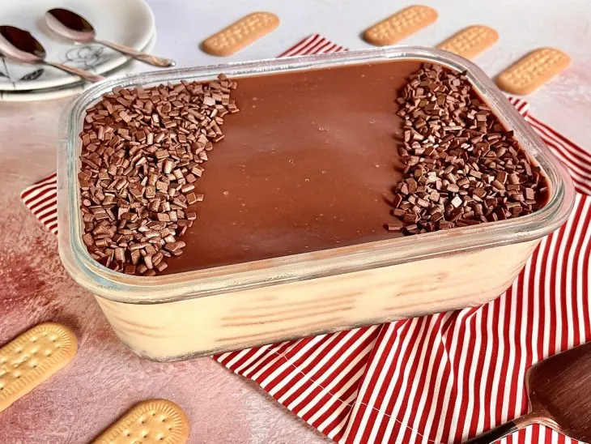

HOME
Chocolate Pavé Recipe

The Creamy Chocolate Pavé
This decadent dessert is the ultimate crowd-pleaser, relying on the contrast between softened cornstarch biscuits and a velvety vanilla cream. To achieve the clean, defined layers visible through the glass dish, each biscuit is quickly dipped in milk before being neatly lined up. The magic happens as the dessert chills; the biscuits absorb the moisture from the cream, transforming into a cake-like texture that melts in your mouth.
The finishing touch, as seen in the photo, is a glossy chocolate ganache poured over the final layer of cream. To give it that professional look, a border of chocolate sprinkles (granulado) is added, framing the smooth surface of the chocolate. Served chilled, this pavé is a rich, nostalgic treat that balances the sweetness of condensed milk with the deep, comforting flavor of cocoa.
Ingredients:
- 2 packets Cornstarch Biscuits: (Bisnaguinha or Maria style).
- 1 can Condensed Milk: The base for the sweet vanilla cream.
- 2 cups Whole Milk: Plus a little extra for dipping the biscuits.
- 2 tbsp Cornstarch: To thicken the custard.
- 200g Semi-sweet Chocolate: Melted with heavy cream for the ganache.
- 1 can Heavy Cream: To make the topping smooth and shiny.
- Chocolate Sprinkles: For that decorative finish.
Steps:
- Make the Vanilla Cream: In a saucepan, mix the condensed milk, whole milk, and cornstarch. Cook over medium heat, stirring constantly, until it thickens into a smooth custard. Let it cool slightly.
- Dip the Biscuits: Pour a little milk into a bowl. Briefly dip each biscuit into the milk—just long enough to moisten them, but not so long they fall apart.
- Layer the Dish: Start with a thin layer of cream at the bottom of a glass dish. Add a layer of moistened biscuits. Repeat the process until you run out of cream, finishing with a cream layer.
- Prepare the Ganache: Melt the chocolate with the heavy cream (in the microwave or a double boiler) until smooth. Pour this glossy mixture over the top layer of the pavé.
- Decorate and Chill: Add the chocolate sprinkles in your preferred pattern. Refrigerate for at least 4 hours (overnight is even better) to let the layers set and the flavors meld.